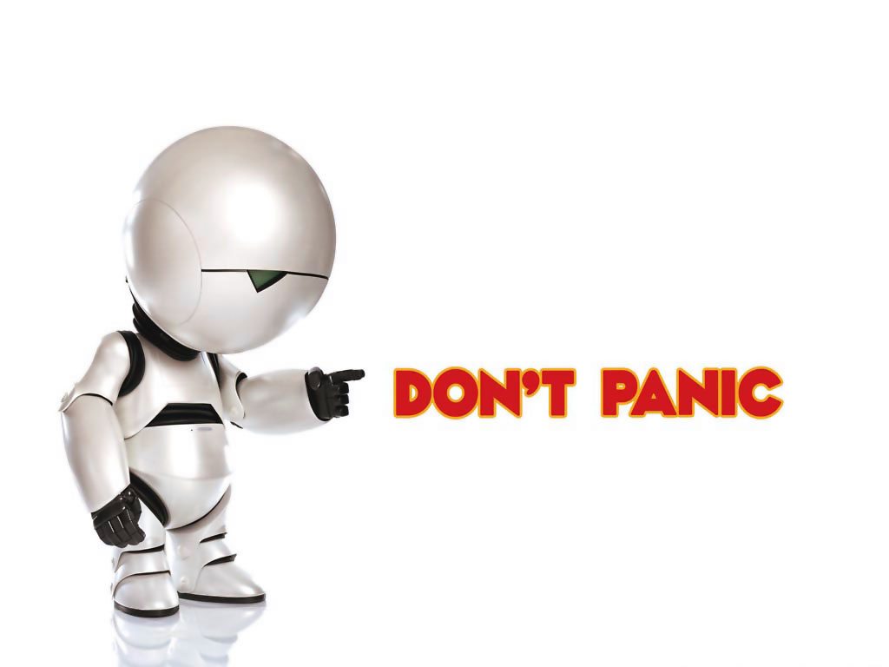

Customer Development
se quiser escutar o audio desta página, aperte o play abaixo. Ele não é obrigatório e não tem nenhuma informação adicional importante. É apenas uma opção disponível para quem prefere audio.
Testando suas hipóteses
A maioria das empreendimentos não possui um processo rápido para testar seus modelos de negócio e transformar suas hipóteses em fatos. As formas mais tradicionais de desenvolvimento demoram para trazer ao processo o principal interessado no desenvolvimento da nova solução, o usuário.
O Customer development process é uma forma de testar as premissas
e fazer as correções quase em tempo real. O processo aproxima os consumidores dos estágios de desenvolvimento
do produto e do negócio. Para isso, quatro fases são propostas:
A figura abaixo mostra a representação destas quatro fases.
Nesta disciplina, o foco será nas duas fases iniciais, de descoberta e validação para que nas demais disciplinas da trilha vocês possam desenvolver as demais competências esperadas.
A fase de "Descoberta do consumidor" é a fase onde as hipóteses sobre a ideia e o produto são colocadas a prova. Para isso, dividimos essa fase em dois momentos de ida a campo. O primeiro momento é a utilizado para entender qual a dor usuário e quem é o nosso usuário. Esta etapa, onde estamos atualmente, possuí como entregáveis principais a nossa persona e passamos e as nossas ideias. Já a segunda ida a campo é o que faremos para mostrar nosso protótipo para os nossos usuários buscando coletar os feedbacks em relação ao produto e a dor que ele resolve.
DON'T PANIC!

É muito comum e esperado recebermos feedbacks negativos e pontos de melhoria. Especialmente se não entendermos a dor real do usuário e como podemos resolver esse problema. Para isso, o melhor remédio é começar o processo novamente. A isso, chamamos de PIVOTAR.
A fase de "Validação do consumidor" prova que o modelo testado na fase anterior é repetível e escalável (capaz de atingir uma grande quantidade de consumidores). Para isso, estamos preocupados com a aquisição de clientes, sua precificação e seus canais de distribuiçao.
É evidente que não esperamos que, neste estágio, as equipes já tenham um produto ou modelo capaz de decolar. A ideia é buscar modelos de venda e de marketing que preparem a equipe para escalar caso seja necessário.
Em essência, enquanto na primeira fase buscamos métricas para validar o produto e como ele atua para resolver a dor do usuário. Na segunda fase buscamos métricas para validar o modelo de negócios e sua capacidade de expansão.
Mas antes de discutirmos as métricas em maiores detalhes, é importante entendermos os diferentes tipos de protótipos.